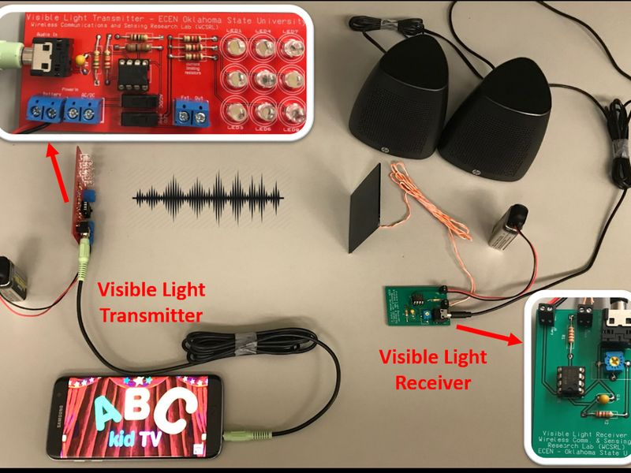
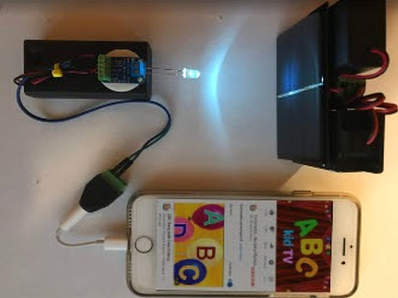
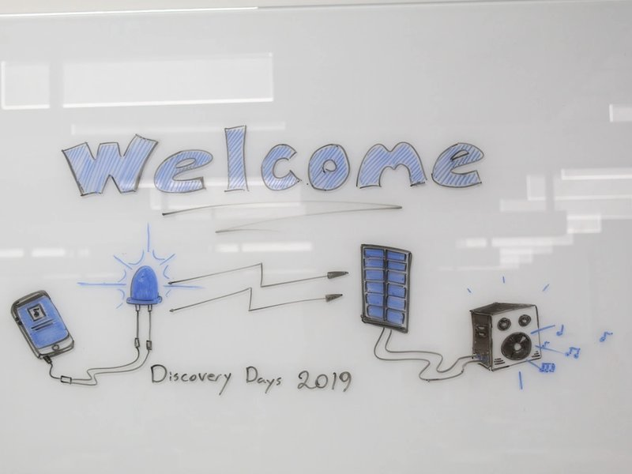
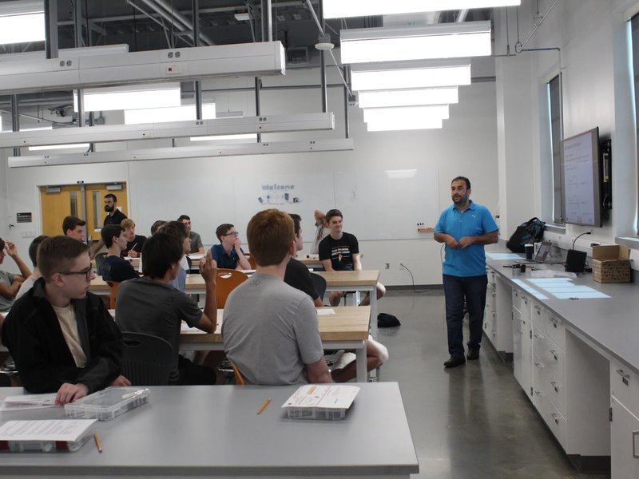
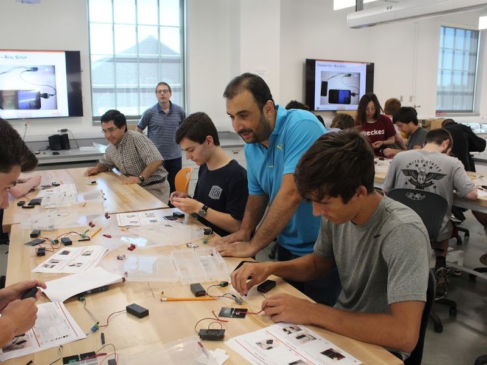
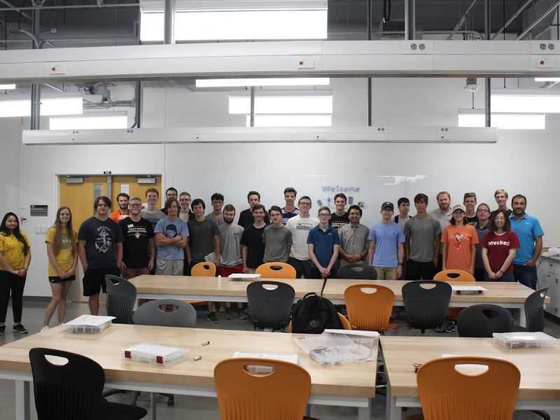
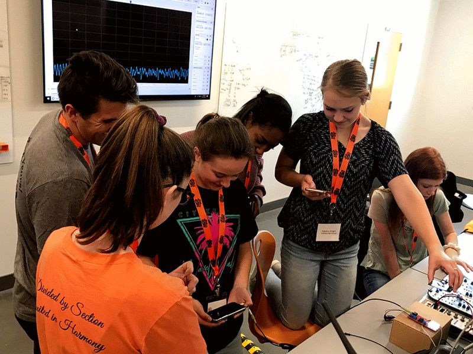
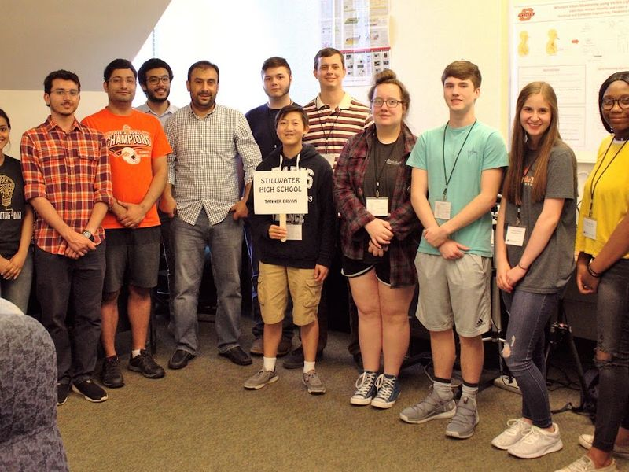
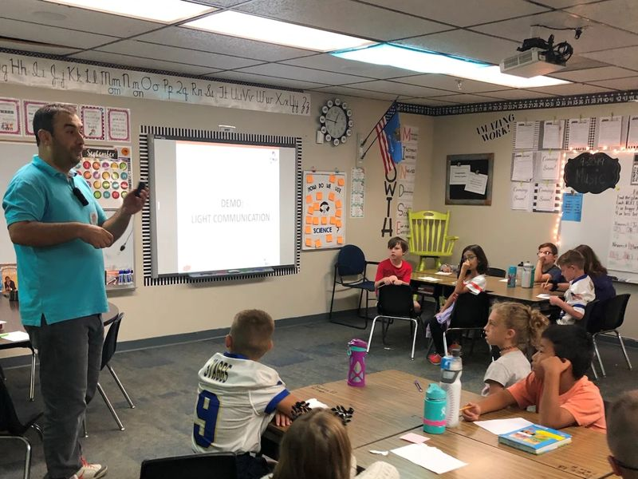

Outreach
Hands-on wireless technology for K-12 students, rural communities, and undergraduates.

DIY Light-Wave Communication KitSince 2017, I have designed and distributed 200+ do-it-yourself visible-light communication kits to K-12 students at schools and a children’s museum, and to undergraduates at Oklahoma State and Texas A&M.2017–present

PETE-Kits rural outreachProductivity Enhancing Technology Experience Kits brought hands-on technology to K-12 schools in rural Oklahoma counties to promote rural entrepreneurship.NSF Smart and Connected Communities · 2021–2023

Student research programsResearch mentor for OK-LSAMP (Oklahoma Louis Stokes Alliance for Minority Participation), NSF REU scholars, and undergraduate research scholars.OK-LSAMP · NSF REU

Schools and museumsNational Lab Day for high-school students (2017–2019), Summer Bridge and Discovery Days, elementary-school visits, and the Oklahoma WONDERtorium children’s museum.K-12 · families
DIY kit: video, slides and paper
The video introduces the kit. The slides are the workshop material students follow to build it (Texas A&M, Fall 2024), and the paper describes the project and how much students learned from it.
From the field








